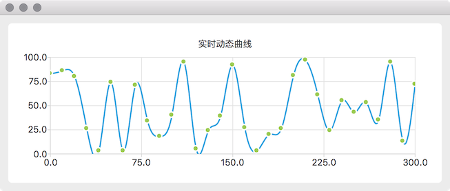

在 实时动态曲线 一节介绍了使用算法实现实时动态曲线，Qt 提供了 charts 模块，使用 QSplineSeries 就能很轻松的实现平滑曲线了，而且效果很好，但是需要注意一点的是，免费版的 Qt 中 charts 模块是 GPL 协议的。
效果如下，随着时间变化，曲线会从右向左移动

如果不会使用 QChart，可以先参考 使用 QChart 创建平滑曲线 后在看下面的实现代码。核心算法就是收到一个新的数据时添加到 List 的后面，并把 List 的第一个数据删除，看上去就是曲线向前滑动了一步。
1 2 3 4 5 6 7 8 9 10 11 12 13 14 15 16 17 18 19 20 21 22 23 24 25 26 27 28 29 30 31 32 33 34 35 36 37 38 39 40 41 42 #ifndef REALTIMECURVEQCHARTWIDGET_H #define REALTIMECURVEQCHARTWIDGET_H #include <QWidget> #include <QList> #include <QSplineSeries> #include <QScatterSeries> #include <QChart> #include <QChartView> using namespace QtCharts;class RealTimeCurveQChartWidget :public QWidget { Q_OBJECT public : explicit RealTimeCurveQChartWidget (QWidget *parent = 0 ) ~RealTimeCurveQChartWidget (); protected : void timerEvent (QTimerEvent *event) Q_DECL_OVERRIDE private : void dataReceived (int value) int timerId; int maxSize; int maxX; int maxY; QList<double > data; QChart *chart; QChartView *chartView; QSplineSeries *splineSeries; QScatterSeries *scatterSeries; }; #endif
1 2 3 4 5 6 7 8 9 10 11 12 13 14 15 16 17 18 19 20 21 22 23 24 25 26 27 28 29 30 31 32 33 34 35 36 37 38 39 40 41 42 43 44 45 46 47 48 49 50 51 52 53 54 55 56 57 58 59 60 61 62 63 64 65 66 #include "RealTimeCurveQChartWidget.h" #include <QDateTime> #include <QHBoxLayout> RealTimeCurveQChartWidget::RealTimeCurveQChartWidget (QWidget *parent) : QWidget (parent) { maxSize = 31 ; maxX = 300 ; maxY = 100 ; splineSeries = new QSplineSeries (); scatterSeries = new QScatterSeries (); scatterSeries->setMarkerSize (8 ); chart = new QChart (); chart->addSeries (splineSeries); chart->addSeries (scatterSeries); chart->legend ()->hide (); chart->setTitle ("实时动态曲线" ); chart->createDefaultAxes (); chart->axisX ()->setRange (0 , 300 ); chart->axisY ()->setRange (0 , maxY); chartView = new QChartView (chart); chartView->setRenderHint (QPainter::Antialiasing); QHBoxLayout *layout = new QHBoxLayout (); layout->setContentsMargins (0 , 0 , 0 , 0 ); layout->addWidget (chartView); setLayout (layout); timerId = startTimer (200 ); qsrand (QDateTime::currentDateTime ().toTime_t ()); } RealTimeCurveQChartWidget::~RealTimeCurveQChartWidget () { } void RealTimeCurveQChartWidget::timerEvent (QTimerEvent *event) if (event->timerId () == timerId) { int newData = qrand () % (maxY + 1 ); dataReceived (newData); } } void RealTimeCurveQChartWidget::dataReceived (int value) data << value; while (data.size () > maxSize) { data.removeFirst (); } if (isVisible ()) { splineSeries->clear (); scatterSeries->clear (); int dx = maxX / (maxSize-1 ); int less = maxSize - data.size (); for (int i = 0 ; i < data.size (); ++i) { splineSeries->append (less*dx+i*dx, data.at (i)); scatterSeries->append (less*dx+i*dx, data.at (i)); } } }
1 2 3 4 5 6 7 8 9 10 11 12 #include "RealTimeCurveQChartWidget.h" #include <QApplication> int main (int argc, char *argv[]) QApplication a (argc, argv) ; RealTimeCurveQChartWidget w; w.resize (700 , 400 ); w.show (); return a.exec (); }